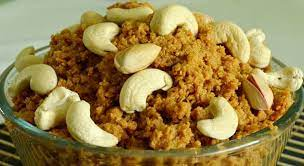

Discover Belagavi,
Instantly.
Ask anything about your city, from the best local eats to weekend events. Get instant, AI-powered answers. üöÄ
Try: "Events this weekend" üéâ or "Forts near me" üè∞
Explore Belagavi
Discover historical landmarks, natural wonders, and local delicacies.

HISTORY
Belagavi Fort
An ancient fort at the city's heart, showcasing a blend of architectural styles from different eras.
NATURE
Gokak Falls
A stunning waterfall on the Ghataprabha River, often called the "Niagara of Karnataka".

FOOD
Belagavi Kunda
Don't leave without trying this iconic sweet, a delicious milk-based dessert that originated here.